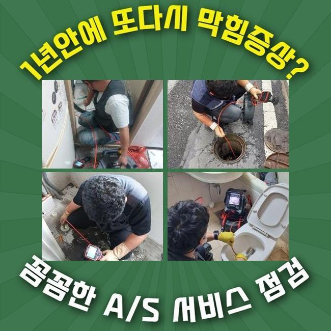
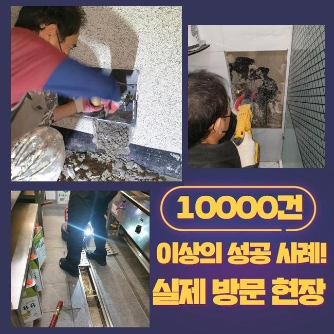
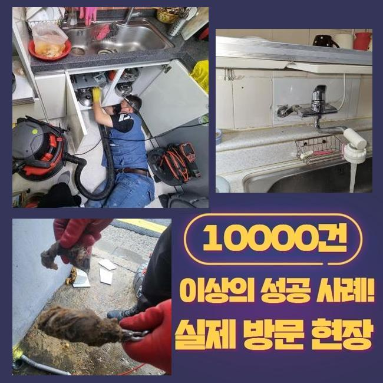
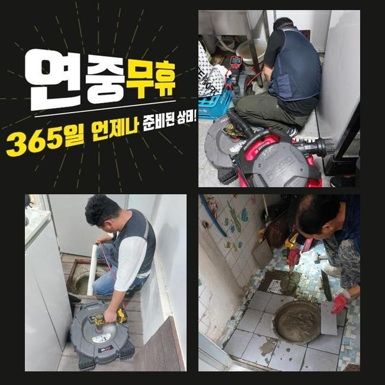
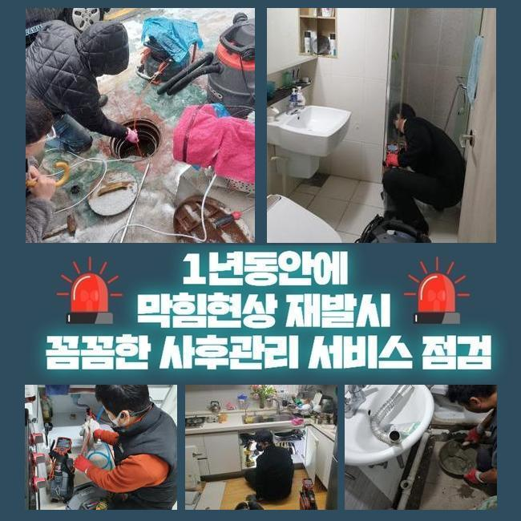
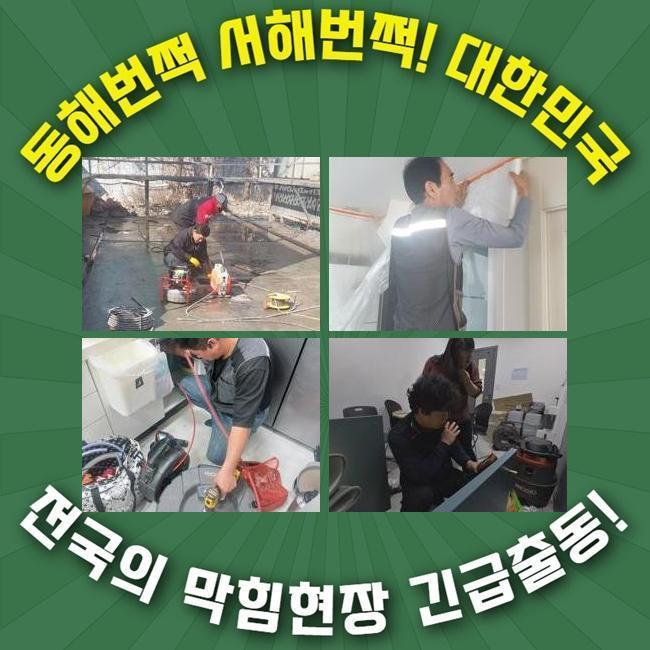

🏠 김제시 배수구뚫는업체 부안군 화장실뚫는업체
용인 싱크대막힘 전문 시공 후기

📋 작업 개요
- 위치: 용인
- 서비스 유형: 싱크대막힘, 하수구막힘, 배관막힘, 집수정막힘, 누수수리, 역류해결, 뚫는업체, 배관청소, 고압세척, 설비공사
- 작업 일시: 2024. 12. 5. 1:46
- 업체명: 하수구수사대 (010-5615-2118)
🔍 문제 상황
김제시 배수구뚫는업체 부안군 화장실뚫는업체
갑자기 주방에서 배수관이 막히는바람에 당혹스러우셨던 상황이 한두번쯤은 있으셨을것 같아요
싱크대에서는 갖가지 음식물음식물찌꺼기성분이 적층되기 쉽기때문에 빈번하게 이러한 상황이 일어나곤 한답니다
개수대 사용량이 많은 식당들은 막힘상황이 더욱 많다고 볼수 있어요
저번주에 중국집에서 물막힘이 생겨 급하게 방문드렸어요
금번엔 해당하는 시공현장을 통해서 배수관련 장애가 나타났을 시 상황과 해결하는 방책을 보다 정확하게 소개해드리도록 할게요
분식집을 운영하는 손님께서 다급히 문의를 하셨는데요
바닥의 배수문으로 사용한물이 흘러나가지 않아 애를 먹고 있다고 하시더라고요
현재 손님을 받고있는 상황이라 빠르게 마무리지어야했고 공구들을 세팅한뒤에 출동하였습니다
음식점에 도착한 후 주방시설을 우선해서 검사하기로 하였죠
싱크대쪽과 바닥배관에서 물막힘이 일어난 사태를 볼수 있었죠
주방공간의 배관은 균일하지 않는 모양으로 설치된 상황이었는데 여러문제점이 발견되었습니다
전반적인 기울기를 점검했을때 배수구주변에 오폐수가 길게 체류한다는걸 알수 있었어요
진단을 해보았더니 배수관에서 그리스트랩쪽으로 향한 장소에서 체증이 일어난게 목격되었어요
그리스트랩을 설명드리자면 단독주택이나 대형시설물에서 수질오염을 방지하려고 시설되는 설비로 찌꺼기를 걸러서 외부로 유출되지않게 합니다

🔎 원인 분석
💡 전문가 진단: 정밀 진단 장비를 사용하여 슬러지의 고착 여부를 판명하고 타격/세척 작업을 실시했습니다.
그리고 하수구에서 방출되는 고린내와 유해성분을 막고 물의 수위를 일정히 유지시키기도 합니다
문제없이 안전하게 이용하려면 거름장치를 부지런히 세척해야 하죠
그리스트랩쪽에서 펌프부속이 망가져버려 제역할이 안되는 상황이었답니다
우선적으로 거름망부품을 제거하고 그리스트랩에 펌프장치를 가설하는 일을 속행했어요
배수관 청소를 시행하기전에 흡입기를 통해서 정체되었던 이물들을 처치하였습니다
그리고 나서 하수구 내부모습을 내시경기기를 넣어 검사하였어요
상황을 진단해보니 배수관 하단부에 커다란 침전물들이 굉장히 많았어요
여러 음식찌꺼기들과 얽혀서 물흐름을 지연시키는 바람에 막힌것이었어요
이러한 이유로 펌프기능이 낙후되어 망가진걸로 판단했습니다
저희팀은 막혀버린 배수관을 뚫어내기 위하여 플렉스샤프트를 사용하기로 결정했습니다
플렉스해당 공구는 고속모터 및 체인노커가 결합된 분쇄기기로 노즐의 끝부분 체인노커의 빠른 움직임으로 단단한 찌꺼기들을 분리시킬수 있죠
배수관의 벽부위에 들러붙은 석회성분도 체인으로 분쇄하면서 정체된 배관을 뚫어주었죠
샤프트장비를 쓸때엔 뚫음시공과 아울러 배관의 세정을 할수있다는 특징이 있답니다
쇠사슬 길이조정을 통해 청소 범위를 조절할수가 있으므로 더욱 효율성있게 업무를 진행할수 있답니다
샤프트기기를 가동할때에 방향을 잘못 설정해 시공한다면 관로에 크랙을 유발할수 있어요

🔧 작업 과정
그리되면 정상적인 파이프까지 들어내야하는 정황을 마주할수 있기에 풍부한 시공경험을 토대로 진행하는게 옳습니다
관로 클리닝을 마무리한 후엔 방수처리까지 시행했습니다
원래 있었던 시설물을 탈거시키고 재차 방수공사를 한거였어요
그것을 통해 배수문트랩과 펌프의 문제들까지 처치할수가 있었답니다
상시로 물을 쓰는 지점에서는 주기적인 청소가 필수입니다
물이 안빠진다면 일시적인 불편함과 더불어 영업을 못하는 정황까지 생길수 있어서에요
하수관의 부품들을 설비할때엔 섬세한 테크닉이 필수랍니다
혹여 틈이 발생하게 된다면 누수증세까지 발발하기도 해요
그러하기에 저희팀은 집수정으로 물이 잘 통하도록 세밀하게 시공했죠
그렇게 되어야 배수 기능이 정상적으로 이루어지는거죠
유수분리조의 배관이 막혀버리면 많이 당혹스러우실텐데 전문 수리기사의 수리를 받아보시면 예사롭게 고칠수 있어요
부속들을 설치한뒤 물빠짐이 깔끔하게 되는지 검사하는 단계가 필요합니다
저흰 설치를 한 다음엔 배관카메라로 부속이 적절하게 작동되고 있는지 점검하고 있습니다
이로서 혹시나 있을 과실을 확인하고 부차적인 문제를 방예할수 있죠
펌프점검이 끝난뒤 트랩덮개를 원위치하는 과정을 시행하였죠
전체적인 업무과정은 순서에맞게 시행돼야 특별한 이상을 초래하지 않고서 종결지을수 있어요
경험이 충분하지 않은 기사가 방문한다면 예상하지못한 문제들이 벌어지기도 하죠
그러하기에 주방쪽 배관이나 화장실에서 물막힘이 일어났을때 어떠한 업체에 연락하느냐가 중요하다고 볼수있죠
추가적으로 말씀드릴 부분은 배수문에서 역류증상이 발발했다면 빨리 고치는게 중요한 부분이죠
시공을 마치고 귀가를 준비하던중에 같은 건물의 의뢰인께서 하수관이 막혀 수선을 요청하셨죠
서둘러서 마무리지은뒤 이동하여 사태를 진단해보았어요
이 현장도 파이프가 찌꺼기 등으로 가득찼다는걸 간파했고 분쇄기기로 소제를 단행하였어요
오랜시간 누적되어왔던 석회성분 및 오물들을 신속히 제거했죠
내시경카메라로 소제된 모습을 자세하게 확인시켜 드렸고 사용요령을 안내하고 뚫음을 끝마쳤죠


✅ 작업 완료
저흰 막혀버린 원인을 세밀하게 점검한뒤 적합한 기기들로 문제를 처리해드립니다
주방공간의 배관에서 생기는 정체현상의 주요 동기는 기름슬러지라고 볼수 있어요
그런 경우에 딱딱해진 찌꺼기 층을 정리해 주어야 정체현상이 재발하지 않아요
단순히 길목만 만들어선 완벽한 배수에 도착하기 힘듭니다
동일한 문제점에 봉착하지 않으려고 한다면 전문가의 장비를 기반으로 안전하게 수리하고 근원적인 동기를 발견하여 처치하여야 한답니다
저희측은 고장이 생긴 동기를 적절한 장비로 알아낸뒤 계획을 세우고 공정에 들어갑니다
풍부한 노하우와 경험을 통해서 조속히 막힘상황을 정리해드리니 관로에 문제가 생겼다면 저희 측에 의뢰 부탁드립니다




⚠️ 베란다 누수 및 방수 관리 방법
- ✅ 비가 많이 올 때 창틀 주변이나 아래층 천장에 얼룩이 생기는지 정기적으로 확인해 보세요.
- ✅ 우수관 주변 실리콘 마감이 들뜨거나 깨진 틈새가 있는지 손상 여부를 수시로 체크하세요.
- ✅ 베란다 바닥 타일의 줄눈(메지)이 소실되면 그 틈으로 물이 침투하여 누수가 유발됩니다.
- ✅ 누수 의심 증상 발견 시 방치하면 아래층 손실이 커지므로 즉시 전문가의 진단을 받으십시오.
💡 핵심 정리
- 확실한 장비 작업(내시경 점검 및 샤프트 스케일링)으로 원인을 뿌리 뽑습니다.
- 작업 후 1년 이내에 동일한 부위 재발 시 100% 무상 A/S 서비스를 보장합니다.
- 서울 · 경기 · 인천 전 지역에 24시간 언제든 긴급 출동할 수 있도록 항시 대기 중입니다.
❓ 자주 묻는 질문 (FAQ)
🚨 용인 싱크대막힘 문제로 고민이신가요?
정확한 원인 진단과 확실한 시공으로 재발 없는 해결을 약속드립니다.
24시간 긴급 출동 | 서울 · 경기 · 인천 전지역 | 1년 내 재발 시 무상 A/S